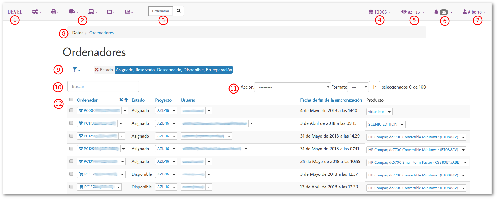
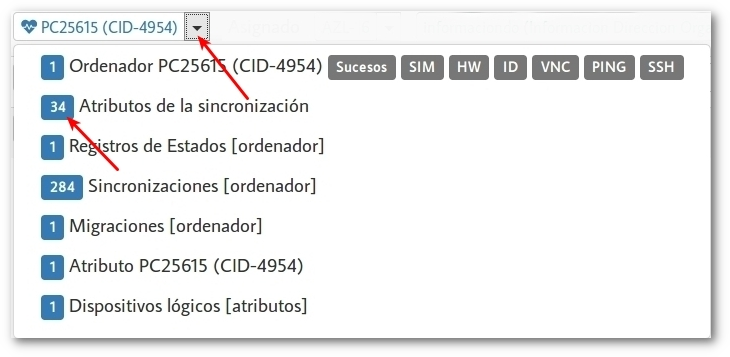

PARTE 3 Guía de uso
El interfaz de administración¶
Mantén tus ojos en las estrellas y tus pies en la tierra.
-- Theodore Roosevelt.
Antes de profundizar en el uso de migasfree, déjame que te describa el interfaz de administración del servidor migasfree mediante la siguiente imagen.

-
Nombre de tu organización (o instancia del servidor) definido en el ajuste de configuración del servidor:
MIGASFREE_ORGANIZATION. -
Menú.
- Configuración.
- Dispositivos.
- Liberación.
- Datos.
- Consultas.
-
Búsqueda rápida de ordenador.
-
Selección de
Dominios. -
Selección de
Ambitos. -
Alertas. -
Usuario que ha iniciado sesión. Permite el
Cambio de contraseña. -
Miga de pan. Debajo de la
miga de panaparece el nombre de los datos con los que estamos trabajando,Ordenadoresen este caso. A continuación del nombre aparecería un simbolo+para introducir más datos en caso de disponer permisos para ello. -
Filtros predefinidos.
-
Búsqueda.
-
Acciones sobre los datos:
- Selecciona los datos (12).
- Elije una acción.
- Pulsa en el botón
ir.
-
Datos.
Ayudas¶
Ahora fíjate que en el interfaz de administración, abajo a la derecha, hay tres iconos de ayuda.
El primer icono, representa al modelo de datos. Te proporciona
información contextual de las tablas y campos de la Base de Datos junto
con sus relaciones con otras tablas. Puede serte útil para obtener
información a la hora de realizar consultas SQL a la Base de Datos.
Mediante el segundo icono podrás acceder a la documentación de la
Migasfree REST API. Desde aquí podrás realizar llamadas directamente a
la API y ver la respuesta del servidor. Muy útil para el desarrollo de
programas que hacen uso de ella.
El último icono, el del libro, también es una ayuda contextual. Pulsando
en él, y dependiendo de en que menú estés situado, se te dirigirá a la
sección de la Guía de uso de Fun with migasfree en la que se
describe lo que estás viendo en ese momento.
Datos relacionados¶
Ahora fíjate en cómo podemos navegar fácilmente por los
datos relacionados, pulsando en el triángulo que aparece a la
derecha de los elementos.

Para acceder a los datos relacionados pulsa sobre el número de elementos.
Mas adelante, cuando cojas soltura, podrás añadir tus propias
acciones externas tales como VNC, PING, SSH, etc. mediante
el ajuste MIGASFREE_EXTERNAL_ACTIONS de
los Ajustes del servidor migasfree, pero
por ahora creo que es suficiente.